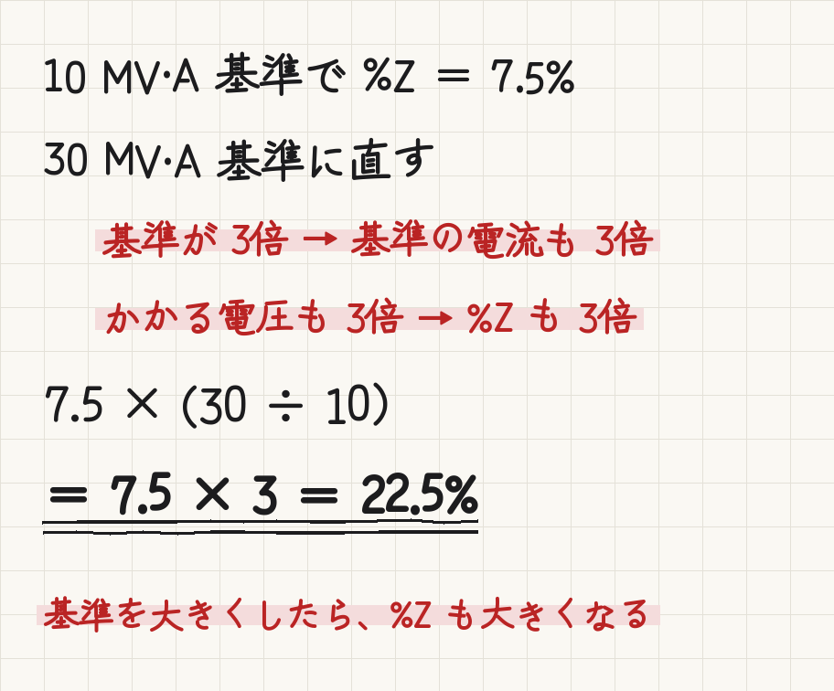

%Z の基準容量の換算の求め方：容量の比を、掛けるのか割るのか
三相と変圧器の全体像 9章のうち、このページは ⑦ %Z と短絡電流
%Z を足し合わせる前に、基準容量をそろえます。このとき、容量の比を掛けるのか割るのかで手が止まります。
先に答え新しい %Z ＝ 元の %Z × 新しい基準容量 ÷ 元の基準容量。基準容量を大きくすると、%Z も同じ比で大きくなります。10 MV·A の基準で 5% なら、20 MV·A の基準では 10% です。
どこで止まるか
止まる段立式%Z が「基準の電流を流したときにかかる電圧の割合」だという意味が、換算の式の前に書かれていないことが多くあります。
基準を大きくしたのに、%Z を小さくしてしまう。たとえば 10 MV·A 基準で 7.5% の値を 30 MV·A 基準に直すとき、7.5 ÷ 3 ＝ 2.5% とする。
なぜ比例するのか
%Z は、「基準の電流が流れたとき、インピーダンスにかかる電圧が何%か」です。基準容量を3倍にすると、基準の電流が3倍になります。インピーダンスそのもの（Ω）は変わらないので、かかる電圧も3倍になります。
新しい %Z ＝ もとの %Z ×（新しい基準容量 ÷ もとの基準容量）
基準を大きくすると %Z は大きくなり、小さくすると小さくなります。
数値で確かめる
10 MV·A 基準で 7.5% → 30 MV·A 基準では 7.5 ×（30 ÷ 10）＝ 22.5%
基準をそろえた後は、直列の %Z はそのまま足せます。

%Z の基準容量の換算の式のまとめ
新しい %Z ＝ 元の %Z × 新しい基準容量 ÷ 元の基準容量
基準容量 10 MV·A で 5% の %Z は、基準容量 100 MV·A に直すと 5 × 100 ÷ 10 ＝ 50% です。基準容量を大きくすると、%Z も同じ割合で大きくなります。
別の呼び方：この計算は「基準容量をそろえる」「基準容量の統一」「百分率インピーダンスの換算」とも書かれます。%Z を足し合わせる前に、必ず同じ基準容量に直します。
確かめの1問
20 MV·A 基準で 6% の %Z を、10 MV·A 基準に直すと何%ですか。
20 MV·A 基準で 6% の %Z を、10 MV·A 基準に直すと何%ですか。
答え
6 ×（10 ÷ 20）＝ 3%。基準の電流が半分になるので、かかる電圧も半分です。この計算を順を追って解く本：第2巻の案内
最終更新：2026年11月17日